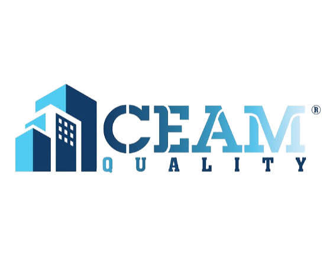
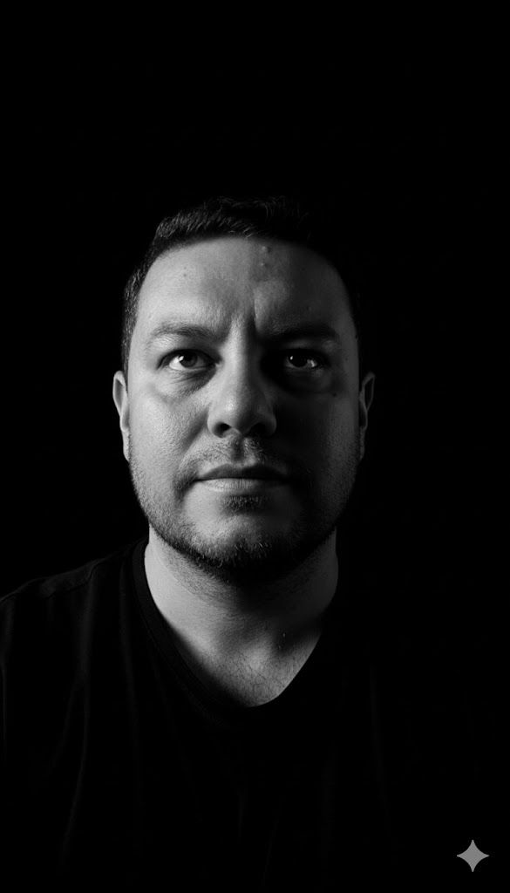

Programa de capacitación especializado de 36 horas diseñado para transformar organizaciones mediante el paso del conocimiento conceptual a la implementación estratégica y operativa.
La IA ha dejado de ser una ventaja competitiva para convertirse en una necesidad operativa. Las organizaciones avanzan, pero la brecha entre el conocimiento técnico y la ejecución real es el principal obstáculo.
Índice AILA 2025 — Colombia como 'Diferenciador'
Sistemas de IA activos en el sector público colombiano
COP asignados en CONPES 4144 hasta 2030
CEAM QUALITY S.A.S. ha consolidado un modelo de capacitación orientado a organizaciones que buscan integrar la innovación tecnológica con rigurosidad normativa, generando un alto impacto en sus procesos productivos y regulatorios.
Las organizaciones ya tienen acceso a herramientas de IA, pero sin una base de estructuración estratégica, metodologías aplicadas y lineamientos de calidad, los proyectos no logran integrarse fluidamente en la operación diaria, generando cuellos de botella y riesgos no evaluados.
Ausencia de políticas de validación de sistemas y trazabilidad de los datos manipulados por la IA.
Instrucciones genéricas (prompts pobres) que resultan en respuestas de baja calidad o "alucinaciones".
El conocimiento es puramente conceptual y no logra descender a la aplicación operativa por área.
Horas Cátedra Totales
Sesiones de 4h
Sincrónico y Práctico
Plataforma CEAM
El programa está estructurado en 4 módulos progresivos que garantizan la apropiación del conocimiento desde su base conceptual hasta el nivel de programación en lenguaje natural. Cada módulo incluye presentación, guía práctica, checklist y actividad corta de aplicación.
Nivelación de conceptos clave orientados a comprender los procesos, riesgos y los fundamentos estratégicos y aplicativos en el contexto actual corporativo.
Sesión Teórica
Introducción a la inteligencia artificial tradicional. Entender de dónde venimos para proyectar hacia dónde podemos aplicar la IA generativa.
Análisis de Entorno
Mapeo de las capacidades actuales de las tecnologías de inteligencia artificial frente a los procesos y riesgos operativos de la organización.
Taller Guiado
Identificación de los sistemas de IA más relevantes para la industria actual y cómo integrarlos de manera funcional en el contexto institucional.
Cada módulo del seminario está diseñado para garantizar la retención a través de:
Gestión operativa y regulatoria. Este módulo garantiza que la implementación de IA cumpla con los estándares de control, validación y trazabilidad en la producción diaria.
Gestión de la calidad de datos bajo principios estrictos de trazabilidad. Cómo garantizar que la información consumida y generada por la IA sea auditable, precisa y confiable.
Técnicas para comprobar que los modelos y respuestas generadas se ajustan a las directrices corporativas, garantizando la consistencia en los flujos de producción.
Identificación y mitigación de riesgos asociados a la privacidad de datos, sesgos algorítmicos y exposición legal en el uso de herramientas de IA Generativa.
|
Procedencia de la Información Garantizar bases de datos limpias |
|
Auditoría de Resultados Verificación humana del output de la IA |
|
Prevención de Fugas (DLP) Protección de datos confidenciales |
El salto de usuario pasivo a "Citizen Developer". Aprender la forma de programar y automatizar procesos con la IA utilizando exclusivamente un lenguaje natural estructurado.
Las bases del 'Vibecoding': cómo utilizar la lógica conversacional para construir secuencias, automatizaciones y pequeños desarrollos sin tener experiencia previa en lenguajes de programación tradicionales.
El ciclo de corrección: cómo instruir a la IA para que identifique sus propios errores, realice pruebas de resultado y adapte su respuesta a la necesidad técnica de la organización.
Estructuración de entornos de trabajo donde la IA no solo obedece, sino que actúa como un colaborador activo, sugiriendo mejoras y asumiendo tareas operativas complejas de manera autónoma pero supervisada.
Es el nuevo paradigma donde escribir código es reemplazado por la habilidad de explicar con extrema precisión lógica lo que se desea lograr, permitiendo que la IA redacte y ejecute la solución subyacente.
Expertos en procesos construyen sus propias soluciones.
Metodología de iteración rápida para garantizar exactitud.
Desarrollo de la capacidad de diseñar instrucciones de forma intencional, precisa y orientada a resultados, asegurando que la IA responda con máxima utilidad y control corporativo.
Superar el nivel de "chat" básico. Estructuración de parámetros condicionales, asignación de roles especializados y delimitación de contexto para evitar respuestas ambiguas.
Aplicación de técnicas de Prompting avanzado (como Few-Shot o Chain of Thought) para garantizar que los formatos de salida coincidan exactamente con las necesidades de los entregables corporativos de la empresa.
Mecanismos para anclar la IA a las bases de conocimiento de la empresa, previniendo alucinaciones y asegurando que las respuestas tengan un nivel de precisión técnico-profesional auditable.
El valor de la IA no está en la herramienta, sino en la capacidad humana de darle instrucciones maestras que eliminen el margen de error.
Los participantes finalizarán con plantillas de prompts optimizadas listas para ser ejecutadas en su día a día.
Nuestro acompañamiento no se basa únicamente en la tecnología; integra la innovación con rigurosidad normativa, experiencia sectorial y metodologías aplicadas de alto impacto.
Amplia trayectoria comprobable trabajando con entidades gubernamentales, instituciones de educación superior, organismos descentralizados y proyectos financiados con recursos públicos.
Entendemos que la tecnología debe operar bajo marcos de cumplimiento. Integramos modelos de gestión documental, automatización segura y análisis de control institucional en todas las capacitaciones.
Para juntas directivas y directores de entidades públicas: el impacto esperado de la formación se puede cuantificar desde el primer trimestre de implementación.
| KPI Sugerido | Método de Medición | Meta Esperada |
|---|---|---|
| Tiempo de Realización de Tareas | Comparación horas hombre antes/después en redacción de informes y actos administrativos | ↓ 30% – 40% |
| Costo por Transacción | Gasto operativo total / número de trámites procesados con IA | ↓ 20% en 12 meses |
| Tasa de Adopción de IA | % de empleados que utilizan activamente las herramientas enseñadas semanalmente | 60% – 80% de la población capacitada |
| Mitigación de Riesgos | Número de incidentes de seguridad o privacidad detectados preventivamente | Reducción significativa de Shadow AI |
ROI esperado en los primeros 12-18 meses (organizaciones de alto rendimiento)
Más relevantes los outputs con prompting optimizado (PwC 2025)
Mayor probabilidad de valor real vs. adopción no estructurada
Fórmula ROI
La formación se desarrolla a través de nuestra Plataforma Educativa Virtual CEAM QUALITY, diseñada para entornos corporativos y programas especializados.
Clases virtuales en vivo (Live) complementadas con espacios colaborativos y grabación de sesiones para posterior consulta institucional.
Combina el análisis conceptual con talleres guiados en tiempo real y resolución de casos de uso específicos del sector de la entidad.
Seguimiento riguroso de asistencia y evaluaciones aplicadas en la plataforma para garantizar la apropiación del conocimiento.
Nuestra plataforma permite una experiencia estructurada, organizada y profesional, completamente alineada a estándares corporativos y gubernamentales.
Profesionales activos en la industria que combinan profundidad técnica con visión estratégica de negocio.
Ingeniero de Sistemas con MBA y 20+ años liderando transformación digital en LATAM. Ha dirigido equipos y proyectos en Mercado Libre, NTT DATA y la Secretaría de Educación de Bogotá. Especialista en AI Strategy, LLMOps, agentes de IA y arquitecturas de plataformas escalables en fintech, govtech y edtech.

Ingeniero de Sistemas (U. Nacional) con MTech en Ingeniería Informática (UOC, 2023) y especialización en Gerencia de Proyectos. Fundador y CEO de Grupo Mirai SAS, líder de desarrollo en la Secretaría de Educación Distrital y docente universitario activo en la U. Militar Nueva Granada. Experto en desarrollo Java, microservicios, cloud y Vibe Coding aplicado.
Parámetros formales de ejecución diseñados para garantizar el máximo aprovechamiento, control y certificación de la experiencia formativa institucional.
El paquete contempla un grupo cerrado de hasta 25 participantes.
Las 36 horas se distribuyen en 9 sesiones de 4 horas (Ajustable a conveniencia sin modificar el total de horas).
Forma de pago sugerida: 50% al inicio y 50% contra finalización del seminario (O acorde a política CEAM QUALITY).
Proveer lista oficial de asistentes. Los participantes requieren acceso a red y/o PC para ingresar a la plataforma con credenciales propias.
Al aprobar esta propuesta, tu organización asegura la formación estratégica de 25 talentos clave, guiados por expertos y bajo una metodología estructurada que combina el avance tecnológico con la rigurosidad normativa.
Representante Legal
Vigencia de la oferta: 15 días calendario
Avenida carrera 45 # 108-27
Centro Empresarial Paralelo 108
Torre 2 Oficina 1201 · Bogotá D.C.
Línea directa para coordinación administrativa y formalización del servicio.
Ceamquality@gmail.com PBX: 3205219269S.A.S. | NIT 900841055-8
Consultoría Técnica · Formación Estratégica · Innovación con IA